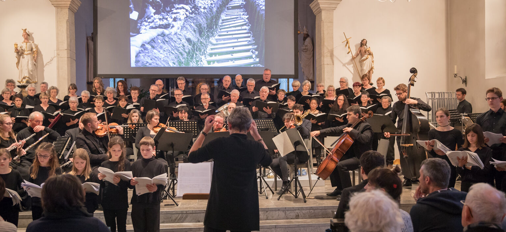

Gemeinschaft & Mitglieder
Unser Verein lebt von seinen Mitgliedern. Jährliche Versammlungen, gesellige Zusammenkünfte und die gemeinsame Leidenschaft für Musik verbinden Menschen verschiedenster Hintergründe.
Seit über 40 Jahren setzen wir uns für ein reiches musikalisches Leben in der Karthäuserkirche Basel ein.
Der Förderverein Kirchenmusik in der Karthäuserkirche wurde 1982 von engagierten Gemeindemitgliedern gegründet, die das musikalische Leben ihrer Kirche nachhaltig unterstützen wollten. Was als kleine Initiative begann, ist heute ein lebendiger Verein mit über 80 Mitgliedern.
Unser Zweck ist einfach: Wir ermöglichen Kirchenmusik. Durch Mitgliederbeiträge und Spenden finanzieren wir Konzerte, unterstützen die Kantorei, pflegen die Orgel und schaffen Begegnungen. Wir arbeiten eng mit dem Kantorat und der Kirchgemeinde zusammen — im Dienst der Gemeinde und der Stadt Basel.
Musik öffnet Menschen. Sie schafft Stille mitten im Lärm, Gemeinschaft mitten in der Vereinzelung, und Hoffnung mitten in der Schwere. Dafür stehen wir ein.
Unser Verein lebt von seinen Mitgliedern. Jährliche Versammlungen, gesellige Zusammenkünfte und die gemeinsame Leidenschaft für Musik verbinden Menschen verschiedenster Hintergründe.
Wir finanzieren Konzerte, Noten und Instrumente. Wir unterstützen die Kantorei bei Proben und Aufführungen und ermöglichen jungen Musikerinnen und Musikern den Zugang zur Kirchenmusik.
Wir sind Partner der Kirchgemeinde, nicht Konkurrenz. Gemeinsam mit dem Kantorat und der Kirchenleitung gestalten wir ein Programm, das Gottesdienst und Konzert als Einheit versteht.
Präsidentin
Elisabeth Müller
Vizepräsident
Thomas Frei
Kassiererin
Monika Huber
Sekretär
Stefan Keller
Beisitzerin
Ruth Zimmermann
Beisitzer
Markus Stalder
Revisorin
Christine Schmid
Revisor
Beat Wenger
Der Vorstand wird jährlich von der Generalversammlung gewählt. Die Generalversammlung ist das oberste Organ des Vereins und findet jeweils im Frühling statt. Unsere Statuten stehen zum Download bereit.

Als Mitglied unterstützen Sie Kirchenmusik in Basel direkt und wirkungsvoll. Der Beitrag ist bescheiden — die Wirkung gross.